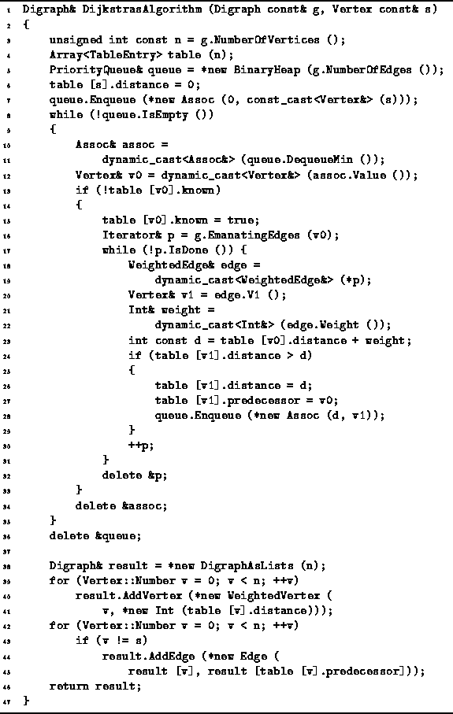
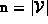

Data Structures and Algorithms
with Object-Oriented Design Patterns in C++
Data Structures and Algorithms
with Object-Oriented Design Patterns in C++
A version of Dijkstra's algorithm is shown in Program  .
The DijkstrasAlgorithm function takes two arguments.
The first is a const reference to a directed graph instance.
It is assumed that the directed graph is an edge-weighted graph
in which the weights are instances of the
Int class defined in Program .
The second argument is a const reference to the start node.
.
The DijkstrasAlgorithm function takes two arguments.
The first is a const reference to a directed graph instance.
It is assumed that the directed graph is an edge-weighted graph
in which the weights are instances of the
Int class defined in Program .
The second argument is a const reference to the start node.

Program: Dijkstra's Algorithm
The DijkstrasAlgorithm routine returns its result in the form of a shortest-path graph. Therefore, the return value is a reference to a Digraph instance. The function allocates the storage, constructs the shortest-path graph and returns a reference to that graph.
The main data structures used are called
table and queue (lines 4-5).
The former is an array of  TableEntry elements.
The latter is a reference to a priority queue.
In this case,
a BinaryHeap of length  is used.
(See Section ).
is used.
(See Section ).
The algorithm begins by setting the tentative distance for the start vertex to zero and inserting the start vertex into the priority queue with priority zero (lines 7-8).
The main loop of the routine comprises lines 8-35. In each iteration of this loop the vertex with the smallest distance is dequeued (lines 10-12). The vertex is processed only if its table entry indicates that the shortest path is not already known (line 13).
When a vertex v0 is processed, its shortest path is deemed to be known (line 15). Then each vertex v1 adjacent to vertex is considered (lines 16-19). The distance to v1 along the path that passes through v0 is computed (lines 20-23). If this distance is less than the tentative distance associated with v1, entries in the table for v1 are updated, and the v1 is given a new priority and inserted into the priority queue (lines 24-29).
The main loop terminates when all the shortest paths have been found. The shortest-path graph is then constructed using the information in the table (lines 38-45).
 Copyright © 1997 by Bruno R. Preiss, P.Eng. All rights reserved.
Copyright © 1997 by Bruno R. Preiss, P.Eng. All rights reserved.